6. Heat engines#
Relevant readings and preparation
Concept in Thermal Physics: Chapter 13: 13.2-13.5, 13.7
University Physics with Modern Physics 15th edition: Chapter 20: 20.2-20.4,20.6
Octane ratings expained: https://www.youtube.com/watch?v=8VWEwEveGTQ&ab_channel=EricTheCarGuy
Carnot cycle and Carnot engine: https://www.khanacademy.org/science/physics/thermodynamics/laws-of-thermodynamics/v/carnot-cycle-and-carnot-engine
A reality check on renewables: https://www.youtube.com/watch?v=E0W1ZZYIV8o&t=378s&ab_channel=TED-Ed
Learning outcomes:
Explain the role and importance of thermodynamic systems and processes.
Learn about different thermodynamic cycles.
Calculate thermal effiency of a heat engine.
Identify the difference between heat engines and refrigerators.
Calculate the efficiency of the corresponding Carnot cycle.
6.1. Introduction to heat engines#
Heat engines are devices that transform heat partially into work or mechanical energy. Independently from the type of engine, heat engines requires a working substance that undergoes through different thermodynamic processes e.g. expansion, compression, heating, cooling.
Two types of heat engines exist:
Closed engines: where working substance is contained in the system and recirculated through a full cycle of thermodynamics processes (es. Rankine cycle)
Open engines: where working substance is not recirculated. The substance is taken from the environment (eg. air), used and expelled (e.g. internal combustation engines ad Otto cycle).
Both open and closed heat engines can operate in a cyclic process, meaning that after thermodynamic processes are complete, the engine returns to its initial state.
In practice, heat engines operate between two thermal reservoirs:
Hot reservoir, which represents the heat source, and provides the working substance with large amounts of heat without reducing its temperature \(T_{H}\).
Cold reservoir, able to absorb large quantities of heat discarded by the working substance without increasing its temperature \(T_{C}\).
An additional branch coming out of the engine represents the amount of heat that has been converted to mechanical work \(W\). See Fig. 6.1 for a general diagram of a heat engine.
{kind=link}
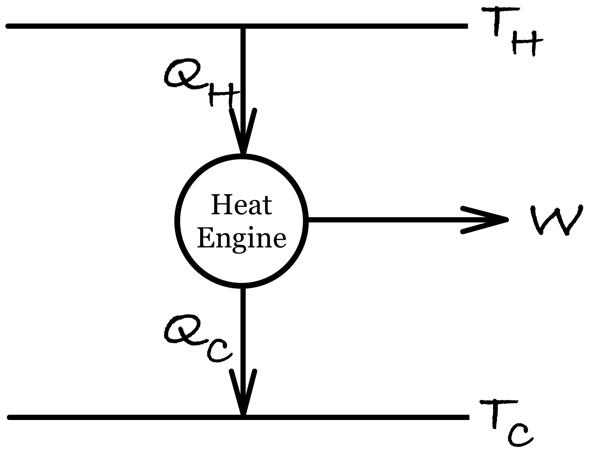
Fig. 6.1 General schematic of a heat engine operating between the hot reservoir at \(T_{H}\) and the cold one at \(T_{C}\).#
Considering the first law of thermodynamics applied at the case of thermodynamic cyclic processes, this means that:
i.e. the net heat flowing in heat engines equals the net work done. All heat engines absorb heat \(Q_{H}\) from a source at high temperature \(T_{H}\), and after performing some mechanical work, discard some heat \(Q_{C}\) at a lower temperature \(T_{C}\).
The net heat \(Q\) per cycle is:
In the particular case of the heat engine, as also shown from Fig. 6.1, \(Q_{C}\) is negative since it’s trasferred from the system to the cold reservoir, while \(Q_{H}\) is positive. The net heat then can be also written as:
The net work \(W\) per cycle is equal to the net heat since we are dealing with a cyclic process:
A way to quantify how well the engine is able to convert heat into work is by calculating the thermal efficiency \(e\):
Since the heat rejected to the enviroment \(Q_{C}\) in a heat engine is always negative, the efficiency of a heat engine is always less than unity. This fundamental limitation is expressed by the Kelvin-Planck statement of the second law of thermodynamics, which states that no heat engine can convert all the heat it receives into work. A portion of the energy must always be rejected to a lower-temperature environment. This limitation is not caused by friction or other practical imperfections. Even an ideal heat engine cannot achieve 100% efficiency. The maximum possible efficiency depends only on the temperatures of the hot and cold reservoirs, a result that will be discussed in the context of the Carnot cycle.
6.2. Carnot cycle#
According to second law of thermodynamics, a heat engine with a 100% efficiency cannot exist. What is then the maximum conversion from heat to work reached by a heat engine?
The answer was given in 1824 by the French engineer Sadi Carnot, who developed a hypothetical, idealized heat engine that has the maximum possible efficiency consistent with the second law. The cycle of this engine is called the Carnot cycle.
For maximum heat engine efficiency all processes must be reversible. This results in:
No temperature drops, i.e. isothermal processes at \(T_{H}\) and \(T_{C}\);
When \(T_{C}<T<T_{H}\), there is no heat transfer between heat engines and reservoirs, i.e. adiabatic processes occur.
{kind=link}
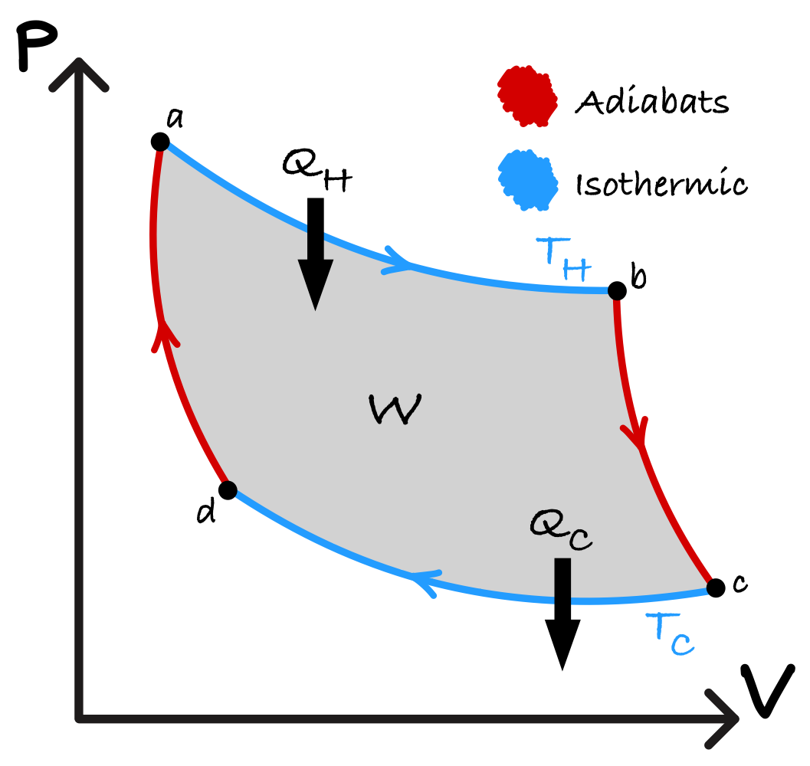
Fig. 6.2 \(pV\) diagram of the Carnot engine cycle operating between \(T_{H}\) and \(T_{C}\). Blue curves correspond to isothermal processes, while red ones correspond to adiabatic transformations.#
The Carnot cycle consists of four reversible processes: two isothermal processes and two adiabatic processes. The thermodynamic states of the Carnot cycle are illustrated in the \(pV\) diagram shown in Fig. 6.2. The cycle proceeds through the following four reversible processes:
Process \(a-b\): Reversible isothermal expansion. The working gas is palced in contact with a hot reservoir at temperature \(T_{H}\). The gas expands slowly while absorbing heat \(Q_{H}\) from the reservoir. Because the temperature difference between the gas and the reservoir is infinitesimally small, the process is reversible and occurs at constant temperature.
Process \(b-c\): Reversible adiabatic expansion. The thermal contact with the reservoir is removed and the cylinder is thermally insulated. The gas continues to expand while performing work on the surroundings. Since no heat is exchanged during this process, the temperature of the gas decreases from \(T_{H}\) to \(T_{C}\).
Process \(c-d\): Reversible isothermal compression. The gas is brought into contact with the cold reservoir at temperature \(T_{C}\). The surroundings compress the gas while heat \(Q_{C}\) is rejected to the reservoir. The compression occurs at constant temperature.
Process \(d-a\): Reversible adiabatic compression. The gas is again thermally isolated and compressed further until its temperature increases from \(T_{C}\) and \(T_{H}\), returning the system to its initial state and completing the cycle.
On the \(pV\) diagram the area enclosed by the cycle represents the net work delivered by the heat engine. The upper portion of the cycle corresponds to expansion processes where work is produced, while the lower portion corresponds to compression processes where work is done on the working fluid.
The reversed Carnot cycle#
Because all processes of the Carnot cycle are reversible, the entire cycle can be reversed. When the direction of the cycle is reversed, the device operates as a refriegerator or heat pump. In this case, heat \(Q_{C}\) is extracted from the cold reservoir, heat \(Q_{H}\) is rejected to the hot reservoir, and a net work input \(W\) is required to drive the cycle. This reversed operation corresponds to the cycle shown in Fig. 6.3 and Fig. 6.4.
{kind=link}
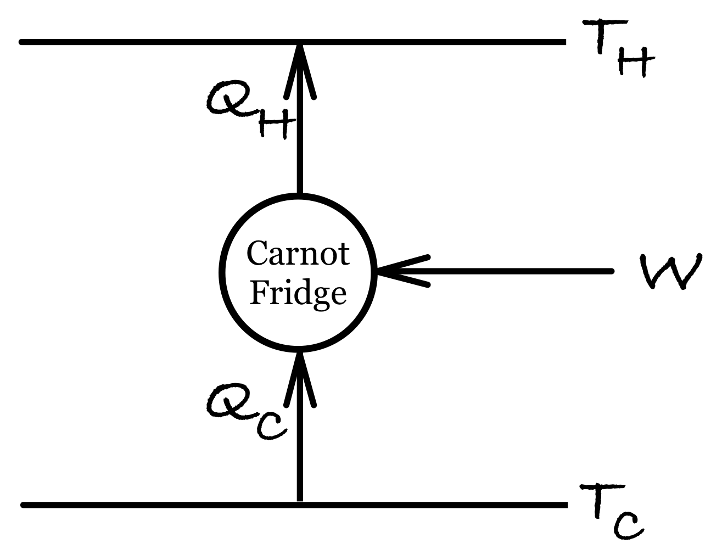
Fig. 6.3 General schematic of a Carnot fridge operating between \(T_{H}\) and \(T_{C}\).#
{kind=link}
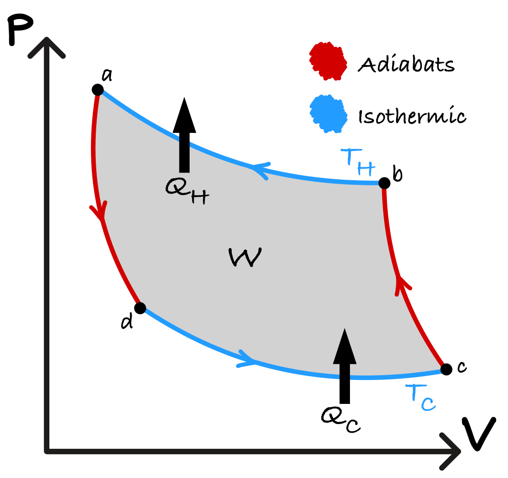
Fig. 6.4 \(pV\) diagram of the Carnot fridge cycle operating between \(T_{H}\) and \(T_{C}\). Blue curves correspond to isothermal processes, while red ones correspond to adiabatic transformations.#
What is the most efficient engine?#
It can be proven that Carnot engine is the most efficient engine. To do that, let us start by assuming it can exist a “super-Carnot” engine, which is characterized by an effiency \(e_{SC}\):
\(x\) being a positive quantity and \(e_{C}\) the efficiency of the regular Carnot engine. Now , let us attach next to this super-engine a regular Carnot fridge with efficiency \(e_{CF}=Q_{C}/W\), as depicted in Fig. 6.5:
{kind=link}
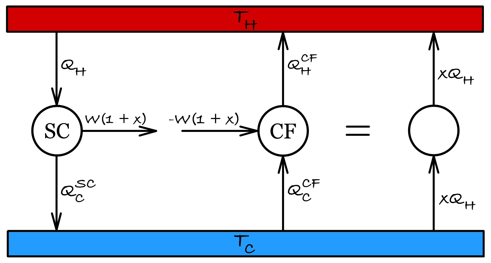
Fig. 6.5 Schematic of the system. From the left the “super-Carnot” engine (labeled SC), the regular Carnot fridge (CF), while on the right the schematics of the resulting system.#
Since the work produced by the super-Carnot engine matches the work required by the fridge to work, the resulting system will consist of a transfer of heat from the cold reservoir to the hot one without any work required.
Moreover, from the definition of efficiency of the Carnot fridge given above, it is possible to observe:
and then the heat transferred to the hot reservoir by the Carnot fridge will be:
Let us express now also the total amount of heat rejected to the hot reservoir:
while the total heat extracted from the cold reservoir to the system will correspond
Calculating the variation of entropy:
which is negative since \(T_{H}>T_{C}\). This clearly violates the second law of thermodynamics and then it is false to assume a super Carnot engine to exist with \(x>0\). To satisfy second law, \(x\leq 0\), which means the Carnot engine is the most efficient heat engine.
Efficiency of Carnot cycle#
To calculate the efficiency of the Carnot engine let’s calculate:
while:
In adiabatic processes \(b-c\) and \(d-a\), we know from Module 4.10 that the pressur-volume relationship is:
Substituting into the ideal gas low we have:
and then for processes \(b-c\) and \(d-a\):
which then results:
The thermal efficiency of the cycle is then:
Equivalently, the coefficient of performance (\(COP\)) of the Carnot refrigerator can be proven to be:
, where now \(W\) is negative (input work required to drive the cycle).
Carnot Principles#
Two fundamental conclusions follow from the second law of thermodynamics. First, the efficiency of any real (irreversible) heat engine is always lower than that of a reversible engine operating between the same two temperature reservoirs. Second, all reversible heat engines operating between the same temperature have exactly the same efficiency, regardless of the working fluid or the specific details of the cycle. These results, known as the Carnot principles, establish the Carnot cycle as the benchmark for the maximum achievable efficiency of heat engines. The Carnot cycle is not a practical engine cycle and cannot be implemented exactly in real machines. Nevertheless, it plays a fundamental role in thermodynamics beacuse it establishes the maximum possible efficiency that any heat engine can achieve between two given temperature reservoirs. No real engine operating between the same temperatures can be more efficient than a Carnot engine.
6.3. Internal combustion engine#
An internal combustion engine is a particular type of heat engine in which energy is retrieved by means of the combustion occurring inside the working fluid (which is typically a mixture of air and fuel).
In Fig. 6.6 it is reported the working principle of one type of gasoline engine.
{kind=link}
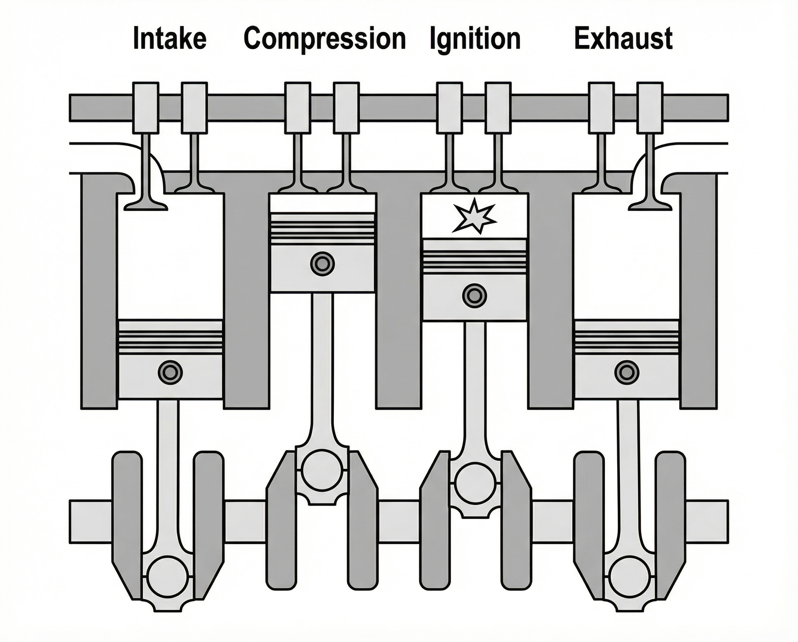
Fig. 6.6 Working principle schematics of an internal combustion engine. In particular, the Otto engine schematic is reported.#
Otto cycle#
The Otto cycle is composed of 4 main processes: two adiabatic and two isochoric processes summarized in Fig. 6.7, and outlined below:
Step 0: Intake stroke. Here the piston moves down, allowing gasoline-air mixture to enter the cylinder via the intake valve.
Step 1 (\(a-b\)): Compression stroke. The intake valve closes and the piston compresses the misture (adiabatic process).
Step 2 (\(b-c\)): Ignition stroke. The spark plug ignites the mixture.\(Q_{H}\) is added to the system by the burnt fuel. This is an isochoric step.
Step 3 (\(c-d\)): Power stroke. The hot mixture expands with pistons being pushed down. This is an adiabatic expansion step, in which the volume is expanded from \(V\) back to \(rV\).
Step 4 (\(d-a\)): Exhaust stroke. The exhaust valve opens and combustion residuals are expelled. The cylinder is ready for the next cycle. This is an isochoric process, where heat \(Q_{C}\) id rejected to the cold reservoir.
{kind=link}
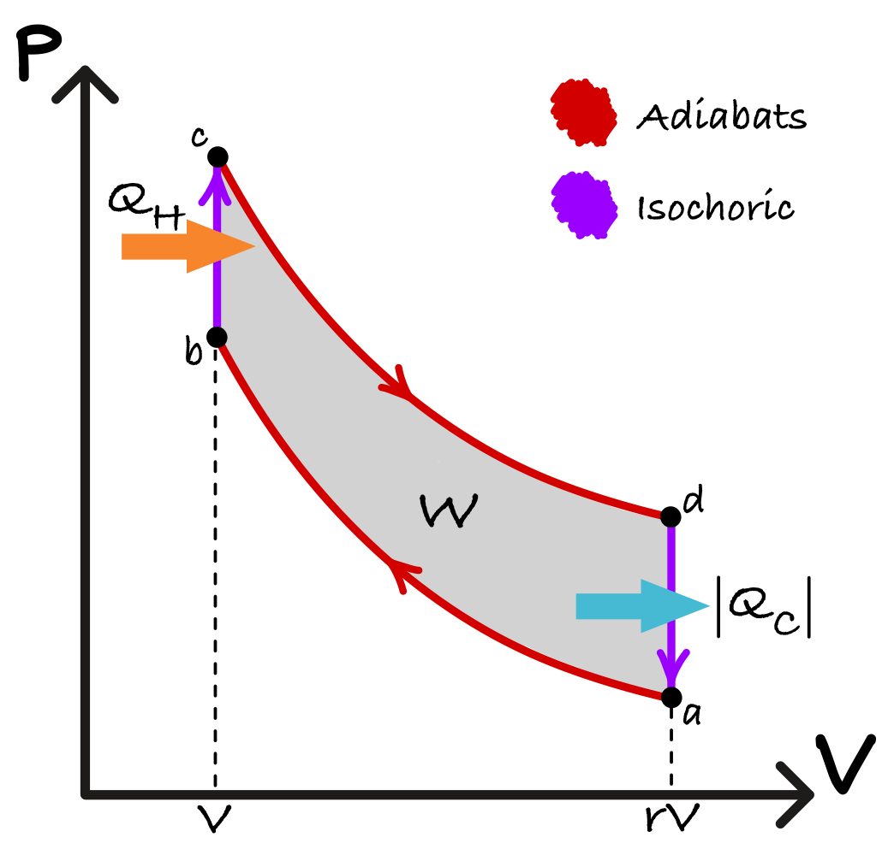
Fig. 6.7 \(pV\) diagram of the Otto cycle. Red curves represent adiabatic processes, while purple curves represent the isochoric processes.#
Let us now calculate the efficiency of the Otto cycle. Let us start from the ioschoric processes \(b-c\) and \(d-a\). An isochoric process is a process at constant volume. Since the volume is not changed, no work is done, \(W=0\), as:
From the first law of thermodynamics we know that \(\Delta U=Q-W=Q\). \(Q\) is then given by:
\(Q_{H}\) and \(Q_{C}\) can then be written as:
The thermal efficiency \(e\) of the Otto cycle is given by:
Because processes \(a-b\) and \(c-d\) are adiabatic, we know from Module 4.10 and Module 6.2 that:
, and by remembering that \(V_{a}=V_{d}=rV\) and \(V_{b}=V_{c}=V\):
, where \(\gamma\) is the ratio of heat capacities of the gas. Substituting into (6.1):
In the idealized model of the Otto cycle, it is worth noting that the thermal efficiency is always less then 1. Using as reference values \(r=8\) and \(\gamma=1.4\) (for air) the theoretical efficiency is \(e\approx 56 \%\). In real internal-combustion engines, where the mixture does not behave as an ideal gas and when phenomena such as friction, heat dissipation and turbulence are considered, efficiency is lower (typically around \(\approx 35 \% \)).
Increasing the compression ratio would result in an higher efficiency, but in reality this also increases the temperature at the end of the compression stroke. This can result in a spontaneous ignition of the fuel, which is known as detonation or pre-ignition, which can eventually damage the engine.
Diesel cycle#
The Diesel engine operates similarly to the gasoline engine. Its cycle is called the Diesel cycle with one one main difference that no fuel is injected in the cylinder at the beginning of the compression stroke compared to the Otto cycle. This difference permits the increase of the compression ratio as it removes the risk of pre-ignition of the fuel.
The Diesel cycle is shown in Fig. 6.8 and is composed of two adiabatic steps, in addition to an isochoric and isobaric step. The steps are summarized below:
Step 0: Intake stroke. Only air enters the cylinder (no fuel).
Step 1 (\(a-b\)): Compression stroke. The intake valve closes and the piston compresses the air. This is an adiabatic process, where the gas is compressed from \(rV\) to \(V\).
Step 2 (\(b-c\)): Fuel ignition. This step is the main difference from the Otto cycle. Intake valve injects fuel fast enough to keep the pressure constant. Fuel ignites spontaneously (no spark plug) as high temperature is developed during adiabatic compression (\(a-b\)).
Step 3 (\(c-d\)): Power stroke. The hot mixture expands with pistons being pushed down. This is an adiabatic expansion step, in which the volume is expanded from \(V\) back to \(rV\).
Step 4 (\(d-a\)): Exhaust stroke. The exhaust valve opens and combustion residuals are expelled. The cylinder is ready for the next cycle. This is an isochoric process, where heat \(Q_{C}\) is rejected to the cold reservoir.
{kind=link}
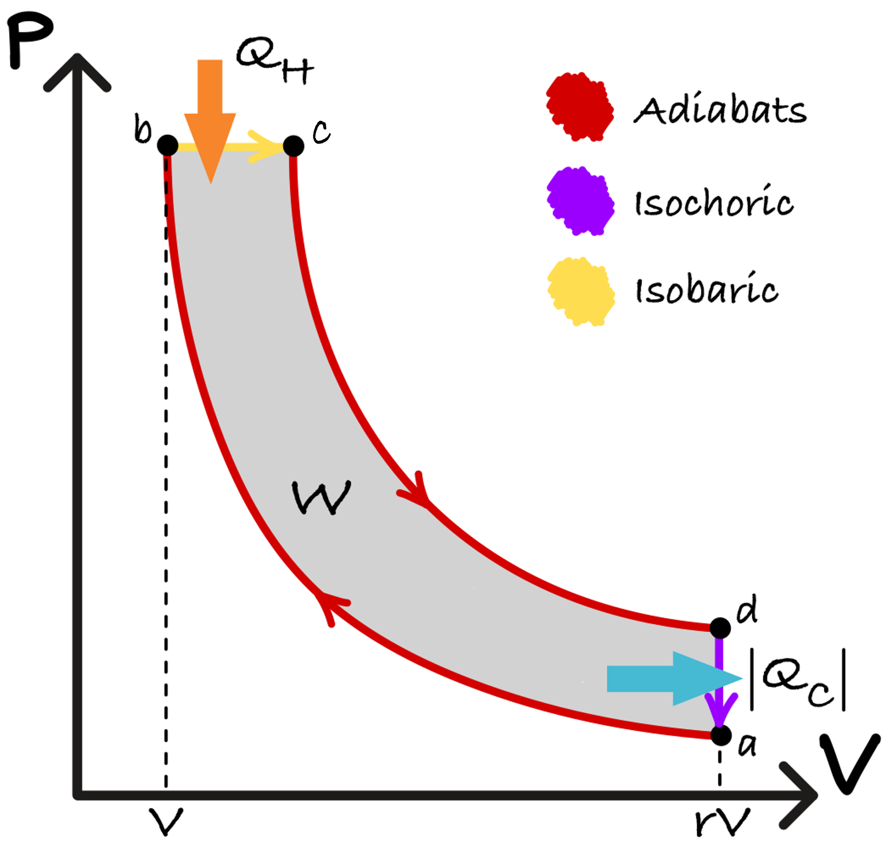
Fig. 6.8 \(pV\) diagram of the Diesel cycle. The red curves represent adiabatic processes, while the purple and yellow curves represent isochoric and isobaric processes respectively.#
The Diesel cycle enables theoretical compression ratios of 15-20 and a corresponding theoretical efficiency of \(\approx 70 \% \) (using \(\gamma\approx 1.4\) for air).
In summary, the key distinction between the Otto and Diesel cycle lies in when fuel is introduced with respect to compression stroke, and this fundamentally shapes their performance limits. The Otto cycle’s pre-mixed fuel-air mixture limits compression due to risk of premature ignition cappin its efficiency. In contrast, the Diesel cycle compresses only air and injects fuel afterwards, eliminating the constraint and enabling significantly higher compression ratios. This make the Diesel engine more efficient.
6.4. Refrigerators and refrigeration cycle#
In nature, heat is transferred spontaneously from regions of higher temperature to regions of lower temperature. For example, a hot object placed in a cooler environment will naturally lose heat until thermal equilibrium is reached. The reverse process, however, cannot occur spontaneously. Transferring heat from a colder region to a warmer one requires the use of special devices known as refrigerators. Like heat engines, refrigerators operate on thermodynamic cycles and use a working fluid called a refrigerant.
With the sign conventions already introduced, for a refrigerator \(Q_{C}\) is positive but both \(W\) and \(Q_{H}\) are negative. Hence:
In Fig. 6.9 the schematic of the refrigerator is reported.
{kind=link}
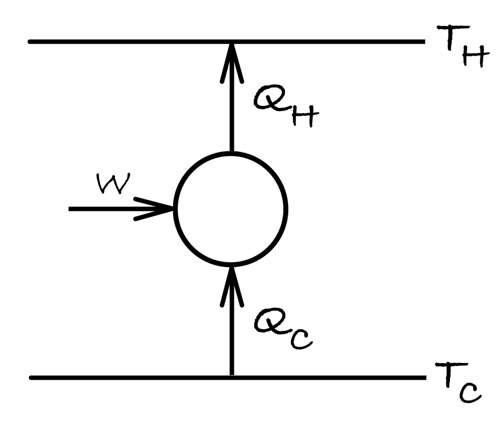
Fig. 6.9 Schematics of a refrigerator.#
From the first law of thermodynamics:
The best refrigerator is the one that is able to remove the largest amount of \(Q_{C}\) with the smallest amount of work \(W\). The effectiveness of a refrigerator is measured by the coefficient of performance (\(COP\)), which quantifies how much heat can be removed from the cold region per unit of work supplied.
For a refrigerator, the desired effect is the removal of heat \(Q_{C}\) from the refrigerated space, while the required input is the work \(W\) supplied to the compressor. The coefficient of performance of a refrigerator is therefore defined as:
Unlike the thermal efficiency of a heat engine, the coefficient of performance of a refrigerator can be greater than unity. This simply means that the amount of heat removed from the refrigerated space can be larger than the mechanical work supplied to the compressor.
Example
A refrigerator has a \(COP=5\). It absorbs 120 J of energy from a cold reservoir in each cycle. Find:
(a) Work required in each cycle
(b) Energy rejected to the hot reservoir
(a)
(b)
Let us look now in detail the thermodynamic transformations the refrigerant undergoes in a refrigeration cycle used in household refrigerators:
{kind=link}
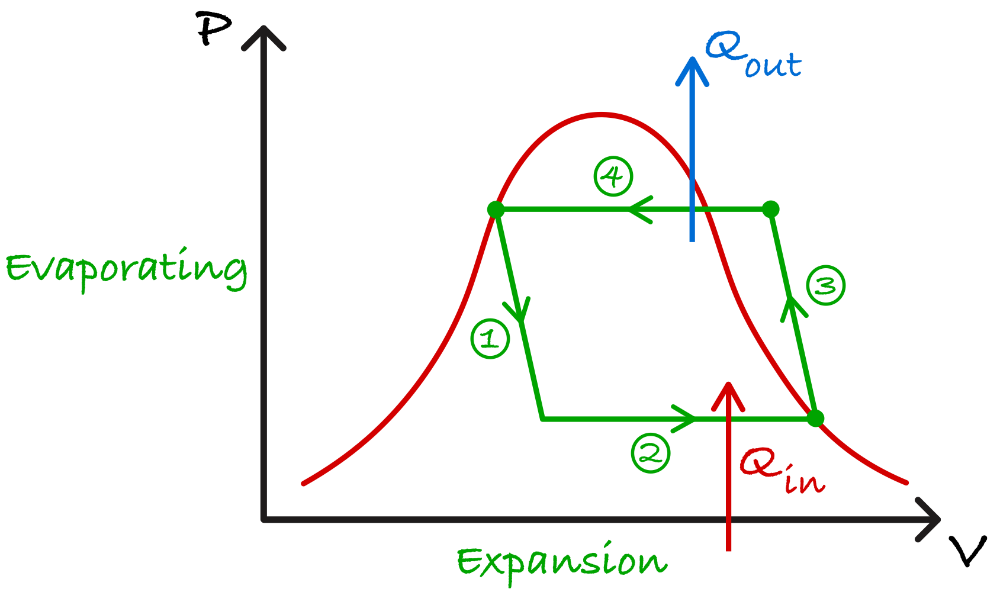
Fig. 6.10 \(pV\) diagram of the refrigeration cycle characterizing a typical household refrigerator.#
Looking at the \(pV\) diagram reported in Fig. 6.10:
\(a-b\): Adiabatic expansion. The refrigerant partially evaporates (i.e. there is a phase change from the liquid phase to the vapour+liquid phase), thus ending as a lower-pressure, higher-volume liquid-vapour mixture.
\(b-c\): Isobaric expansion. The refrigerant mixture changes phase from liquid-vapour mixture to vapour phase, thus ending in a high \(T\), low \(p\) and high \(V\) state and absorbing heat \(Q_{in}\) from inside the refrigerator.
\(c-d\): Adiabatic compression. The refrigerant gets compressed adiabatically by a pump, thus ending up in a high-pressure, high-volume gas.
\(d-a\): Isobaric compression. The refrigerant condenses from the vapour phase to the liquid phase, thus releasing heat \(Q_{out}\) to the external environment.
6.5. Equivalence between Kelvin and Clausius statement#
It is possible to show that the two statements of second law are completely equivalent. To do that, let us imagine to have an “anti-Clausius” system, i.e. a workless (i.e. no work needed to drive the refrigeration) refrigerator and to attach in series a regular heat engine, as reported in Fig. 6.11
{kind=link}
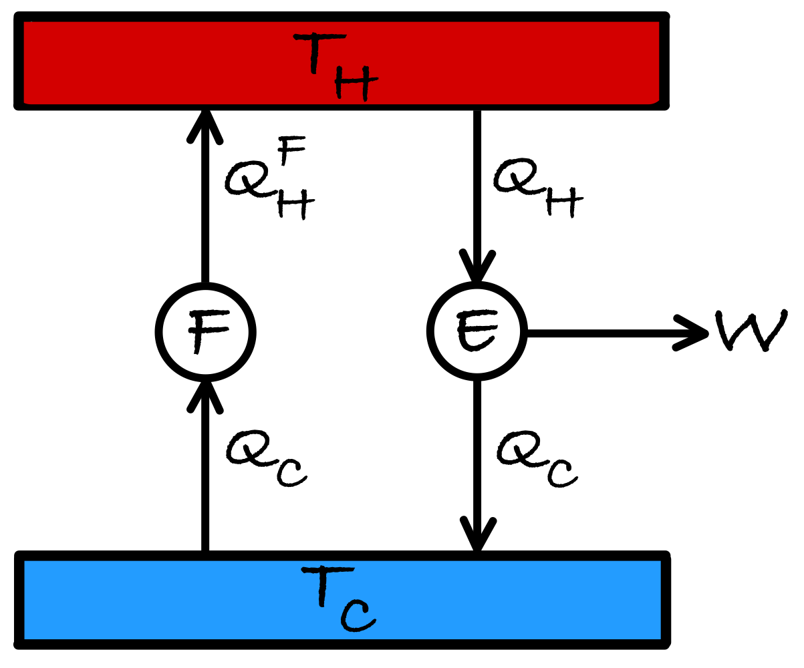
Fig. 6.11 Schematics of an “anti-Clausius” system (labeled F in figure) and a regular heat engine (E) attached in series.#
Writing down first law equation for the total system:
, which corresponds to the so-called “anti-Kelvin” system, i.e. an heat engine capable of extracting heat from a single reservoir and converting it entirely to work.
The two statements can be proven to be equivalent also starting from an anti-Kelvin engine in series with a regular refrigerator, which eventually leads to the Clausius statement.
{kind=link}
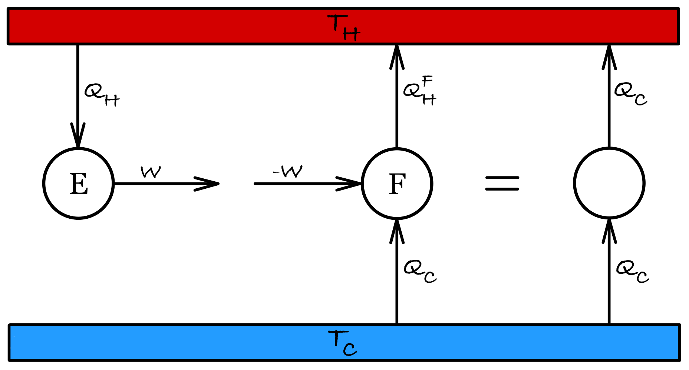
Fig. 6.12 Schematics of 100 % efficient engine (E) and a regular fridge (F) attached in series.#
Can an engine with 100% efficiency exist?
To answer, let us state that such an engine can exist, and let us attach it to a fridge (which we will see after), as depicted in Fig. 6.12.
The engine, having 100 % thermal effiency, converts all the heat extracted \(Q_{H}\) from the hot reservoir to work \(W\), which is used to make the fridge work and extract \(Q_{C}\) from the cold reservoir (this time \(Q_{C}\) is positive) and deliver \(Q_{H}\) to the hot one.
Balancing out the whole system, it turns out that the outcome of the combined engine is to extract \(Q_{C}\) from the cold reservoir without any work required.
Let us calculate now the variation of entropy associated to the combined engine:
, which then results in a negative quantity. As already discussed in the previous chapter (Module 5.7), second law of thermodynamics states that it’s not possible for a thermodynamic transformation to occur without an increase of the entropy associated to the system.
This means that the system composed of the “perfect” engine and the fridge cannot exist, thus proving that there are no heat engines with 100 % thermal efficiency.
6.6. Rankine cycle#
In Module 6.3 gas power cycles were introduced, in which the working fluid remains in the gaseous phase throughout the entire cycle. In this chapter, we turn to vapour power cycles, where the working fluid is alternately vaporized and condensed. These cycles are widely used in large-scale power generation and can also be coupled with process heating in applications known as cogeneration. The increasing demand for higher thermal efficiencies in power generation has driven the development of improved vapour power cycle configurations. These include modifications such as reheat, regenerative feedwater heating, and combined gas-vapour cycles, all aimed at extracting more useful work from a given heat input.
Among the various working fluids available, water (steam) is the most commonly used due to its low cost, availability, and high latent heat of vaporization. Although steam power plants may differ in their heat source – such as coal, nuclear, or natural gas – the fundamental thermodynamic processes remain largely the same. To understand the design and performance of these systems, it is useful to first consider the theoretical limits of efficiency and the practical constraints that arise in real cycles. This leads to the development of the Rankine cycle, which forms the basis of modern steam power plants.
Before introducing the Rankine cycle, it is useful to recall the Carnot cycle, which represents the maximum theoretical efficiency achievable between two temperature limits. However, despite its theoretical importance, the Carnot cycle cannot be implemented in real systems due to several practical limitations:
Isothermal heat addition and rejection require infinitely slow heat transfer: Maintaining constant temperature during heat transfer requires an infinitesimally small temperature difference between the working fluid and the heat source/sink. On a pV diagram, these processes appear as smooth curves, but in reality achieving them would require unrealistically long times and extremely large heat exchangers.
Compression of a wet vapour mixture is mechanically impractical: During the Carnot cycle, compression occurs in the two-phase region. Compressing a vapour can induce condensation, forming liquid droplets within the flow (recall Module 3.4). These droplets can damage compressors or turbine blades and lead to severe efficiency losses, making the process mechanically unsafe and energetically inefficient.
While Otto and Diesel cycles describe internal combustion engines, steam power plants operate on a fundamentally different principle based on external heat addition, where the working fluid is separate from the combustion process.
The Rankine cycle avoids the key limitations of the Carnot cycle by:
Replacing isothermal heat transfer with constant-pressure processes
Ensuring that compression occurs only in the liquid phase
Allowing expansion to occur primarily in the vapour phase
These modifications make the cycle feasible for power generation systems. The physical layout of the Rankine cycle is provided in Fig. 6.13 and is composed of a pump, boiler, turbine and condensor.
{kind=link}
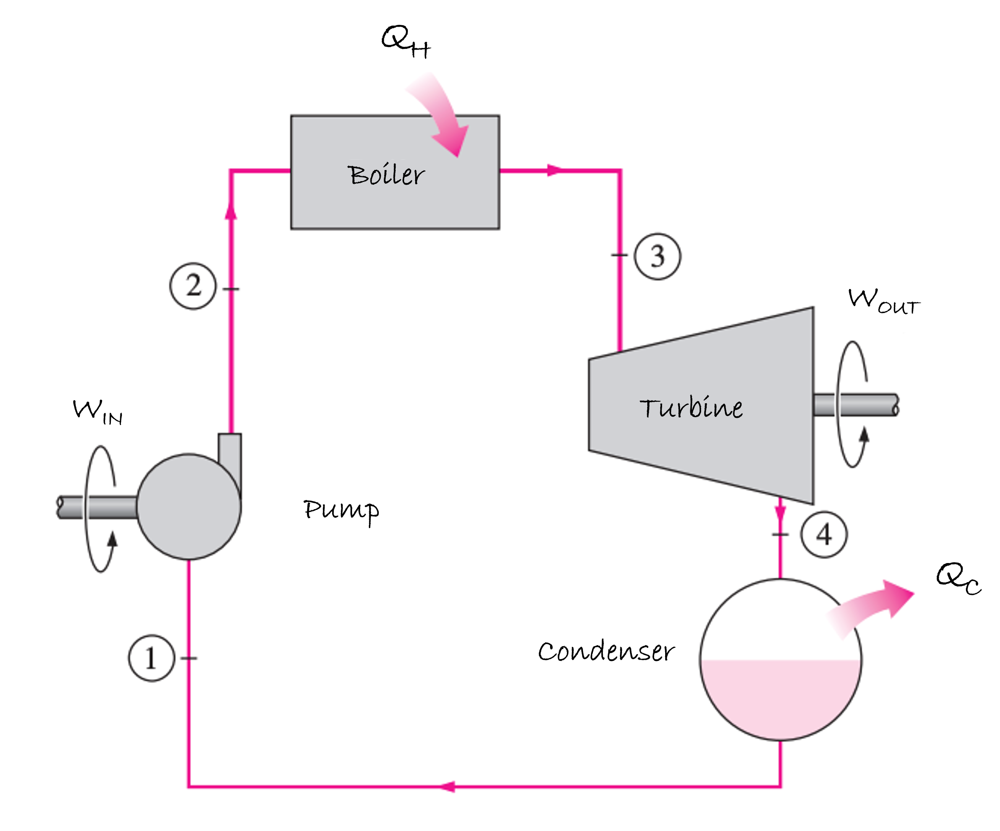
Fig. 6.13 Schematics of Rankine cycle.#
The Rankine Cycle stages (refer to \(pV\) diagram, Fig. 6.14) can be clearly identified on the \(pV\) diagram:
{kind=link}
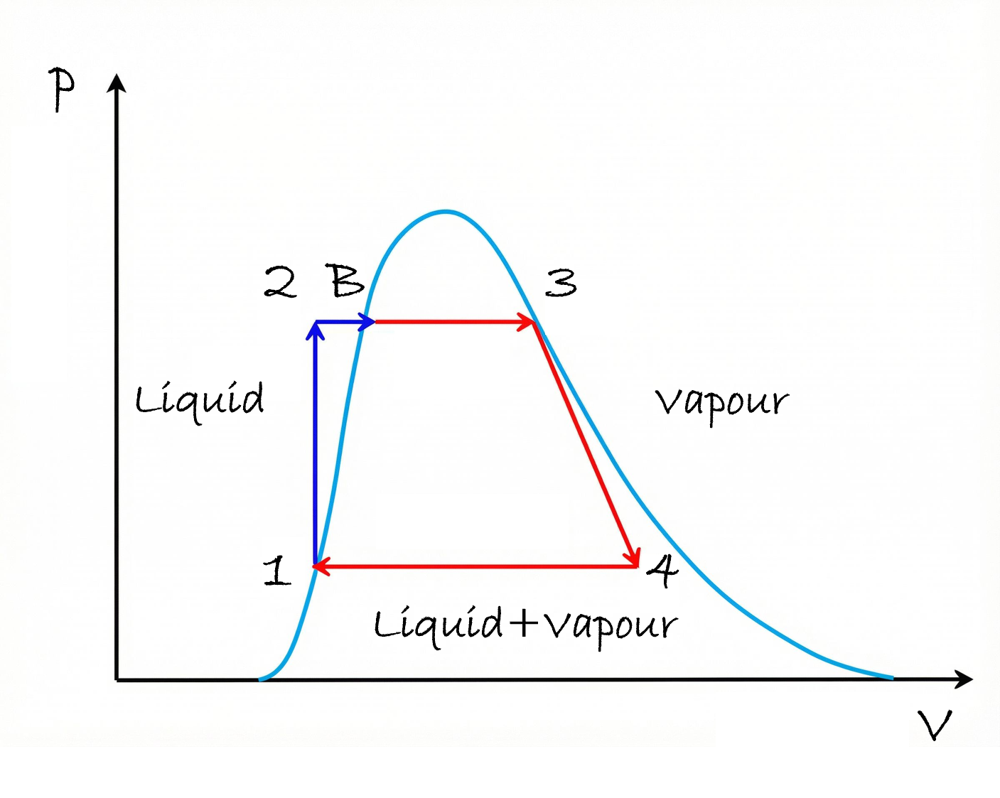
Fig. 6.14 \(pV\) diagram of the regular Rankine cycle.#
In detail:
1 → 2: Pump (liquid compression (isoentropic)). Water enters as a saturated liquid from the condenser. It is compressed to a higher pressure by the pump. On the \(pV\) diagram, this appears as a nearly vertical line (very small volume change). Because the fluid is liquid, no phase change occurs, and the work required is small.
2 → 3: Boiler (constant-pressure heat addition) The high pressure water water is heated to high pressure steam at constant pressure:
First, temperature rises (compressed liquid region)
Then phase change occurs (liquid → vapour)
Optionally, the vapour is superheated ( shown in
super_heated_rankine). On the \(pV\) diagram, this corresponds to a large increase in specific volume as the water evaporates.
Note that some common heat sources for the boiler include: burning fossil fuels (e.g. coal, natural gas), nuclear energy (heat fromn nuclear fission), solar energy, geothermal (heat from hot fluids in the ground).
3 → 4: Turbine (adiabatic – more accurately it is isoentropic – expansion) High-pressure steam expands through the turbine, producing mechanical work, which.can be used for example to spin a generator. Pressure and temperature decrease, and the fluid may enter the wet region (vapour–liquid mixture). On the \(pV\) diagram this is a downward-sloping expansion curve.
4 → 1: Condenser (constant-pressure heat rejection) Heat is rejected at constant pressure, and the steam condenses back into liquid. On the \(pV\) diagram, the volume decreases significantly as the fluid returns to the saturated liquid state.
6.7. Nuclear power#
Thermodynamic principles also apply to systems that exploit nuclear reactions to generate electricity. Energy can exist in many forms,thermal, mechanical,kinetic, potential, chemical, electrical, and nuclear and their sum constitutes the total energy of a system. In thermodynamic analysis we are usually interested in the change of energy rather than its absolute value. In most engineering applications, the energy extracted from a source is converted into thermal energy and subsequently into mechanical work by means of a heat engine. Nuclear power plants operate according to the same thermodynamic principle as conventional thermal power plants. The key difference lies in the source of heat. Instead of burning fossil fuels, nuclear reactors generate heat through nuclear reactions occurring inside the reactor core. The thermal energy produced by these reactions heats water to produce steam, which expands through a turbine connected to an electrical generator, thereby converting thermal energy into mechanical and then electrical energy.

Fig. 6.15 Schematics of a nuclear power plant. Image taken from https://science.howstuffworks.com/nuclear-power2.htm .#
Fig. 6.15 illustrates the basic layout of a nuclear power station. Heat generated inside the reactor building is transferred to water in a boiler system, producing high-pressure steam. The steam drives a turbine connected to a generator, which produces electricity that is transmitted to the power grid. A cooling system removes excess heat and condenses the steam so that the cycle can continue.
Nuclear fission#
The heat produced in nuclear reeactors originates from nuclear fission reactions. In this process, a heavy atomic nucleus absorb a neutron and becomes unstable, splitting into smaller nuclei while releasing additional neutrons and a large amount of energy. Inside the reactor the following reaction can occur:
, where top-left numbers correspond to mass number (protons+neutrons), the bottom-left one to the atomic number, and \(n\) stands for neutrons. In this reaction a uranium-235 nucleus absorbs a neutron and splits into barium-142 and krypton-91 and three additional neutrons, releasing energy \(E\).
Crucially, the total mass of the products is slightly less than the total mass of the reactants. This difference in mass, called the mass defect, is what produces the energy. The “missing” mass is converted into energy according to Einstein’s relation:
, where \(\Delta m\) is the decrease in mass and \(c\) is the speed of light. This mass change is directly related to the binding energy, which measures how tightly nucleons are held together in a nucleus. The fission products (barium and krypton) have a higher binding energy per nucleon than uranium-235, meaning they are more stable and tightly bound. As a result, the total binding energy increase during the reaction. Since binding energy contributes negatively to the mass of a nucleus, an increase in binding energy leads to a decrease in total mass. The lost mass is therefore released as energy, which appears as heat in the reactor and is ultimately used to generate electricity.
Binding energy is the energy required to completely disassemble a nucleus into its individual protons and neutrons. Equivalently, it is the energy released when a nucleus is formed from these nucleons. A useful quantity is the binding energy per nucleon, which indicates how tightly each nucleon is bound within the nucleus. In the plot of Fig. 6.16 the binding energy behavior associated to the number of nucleons (protons and/or neutrons) is reported.
{kind=link}
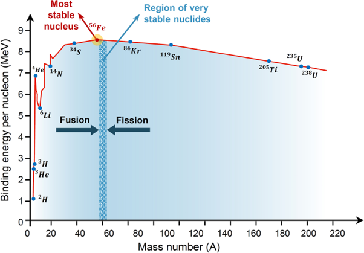
Fig. 6.16 Binding energy per nucleon as a function of mass number (number of nucleons). The curve peaks near iron (\(^{56}\mathrm{Fe}\)), indicating the region of maximum nuclear stability. Light nuclei (low mass number) release energy through fusion as they move up the curve toward higher binding energy, while heavy nuclei (high mass number, e.g., uranium) release energy through fission as they split into nuclei closer to the peak. Image taken from https://www.nature.com/articles/s41598-022-16498-4 .#
The graph of binding energy per nucleon as a function of the number of nucleons (Fig. 6.16) shows that nuclei around iron (e.g., iron-56) are the most stable, as they have the highest binding energy per nucleon. Lighter nuclei (such as hydrogen or helium) can release energy by fusion, where they combine to form more tightly bound nuclei. In contrast, very heavy nuclei (such as uranium-235) have lower binding energy per nucleon and can release energy through fission, where they split into smaller, more stable nuclei.
In the case of uranium-235, the binding energy per nucleon is approximately 7.6 MeV. Since one eV corresponds to \(1.6\times 10^{−19} \mathrm{J}\), the total binding energy of a uranium-235 nucleus can be estimated as:
When uranium undergoes fission, it splits into nuclei that lie closer to the peak of the binding energy curve, meaning they are more tightly bound. This increase in binding energy corresponds to a decrease in total mass.
Example
Question. Uranium \(_{92}^{238}\mathrm{U}\) decays into Thorium \(_{90}^{234}\mathrm{Th}\) and an \(\alpha\) particle.
Calculate how much energy is released in the process.
Hint.
Mass of \(_{92}^{238}\mathrm{U}=238.0508\ \mathrm{u}\)
Mass of \(_{90}^{234}\mathrm{Th}=234.0426\ \mathrm{u}\)
Mass of \(_{2}^{4}\alpha=4.0026\ \mathrm{u}\).
\(1\ \mathrm{u}=1\ \mathrm{atomic\ mass\ unit}=\frac{1}{12}\ \mathrm{of\ mass\ of\ carbon-12}=1.66\times 10^{-27}\ \mathrm{kg}\)
Solution.
Let us substitute masses from left side and right side of the reaction:
Plugging into Einstein’s equation:
Chain reactions#
In the nuclear reaction describing uranium decay, we observe the presence of three neutrons as reaction products, which can collide with other uranium atoms, thus giving rise to a chain reaction, as illustrated in Fig. 6.17.
{kind=link}
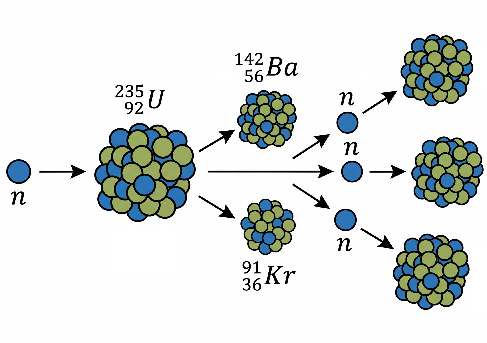
Fig. 6.17 Schematics of chain reaction decay occurring inside the reactor of a nuclear power plant.#
In order to maximize the efficiency of the reaction, neutrons need to be slowed down. To achieve that, heavy water is used (\(\mathrm{D}_{2}\mathrm{O}\)) is used. To control the chain reaction, rods made of boron are implemented (they absorb neutrons): when rods are inserted in the reactor, the reaction is slowed down, while it speeds up when rods are removed.
Nuclear fusion#
Another possible source of nuclear energy is fusion, in which tow light nuclei combine to form a heavier nucleus while releasing energy. An example is the fusion reaction of two deuterium nuclei (deuterium is an isotope of hydrogen):
Fusion reactions are responsible for the enormous energy output of the Sunand other stars. However, achieving controlled fusion on Earth is extremely challenging because the positevly charged nuclei strongly repel each other through Coulomb forces. To overcome this repulsion, the reacting particles must reach temperatures on the order of \(10^{8}\) K, conditions typically found only in stellar interiors or nuclear explosions.
6.8. Energy density of fuel and energy storage systems#
Specific energy (MJ/kg), measures how much energy can be stored per unit mass of a fuel or energy carrier. It is a critical parameter when comparing different energy sources, particularly for applications such as transportation and power generation, where mass constraints are important.
Uranium, used as a nuclear fuel, has an extraordinarily high specific energy compared to all chemical fuels. According to the Energy Density Table, uranium used in nuclear fission has a specific energy on the order of \(\sim 8\times 10^{7}\) MJ/kg (depending on burnup assumptions). This immense value arises because nuclear reactions convert a small fraction of mass directly into energy, as described by mass-energy equivalence. As a result, a very small quantity of uranium can produce vast amounts of energy (Module 6.7), which is why nuclear power plants require relatively little fuel compared to fossil-fuel plants.
In contrast, conventional liquid fuels such as gasoline and diesel rely on chemical energy stored in molecular bonds. Gasoline has a specific energy of approximately 46 MJ/kg, while diesel is slightly higher at about 45–46 MJ/kg. These values are many orders of magnitude lower than uranium but are still very high among chemical fuels. Their relatively high specific energy, combined with their liquid state at ambient conditions, makes them highly suitable for transportation, where both energy density and ease of storage are essential. Diesel’s marginally higher energy density, along with higher engine efficiency, explains its widespread use in heavy-duty transport and industrial applications.
Lithium-ion batteries, which store energy electrochemically rather than chemically through combustion, have significantly lower specific energy. Typical lithium-ion batteries have a specific energy in the range of \(\sim\)0.5–0.9 MJ/kg (roughly 150–250 Wh/kg). This is about 50-100 times lower than gasoline or diesel. Despite this limitation, lithium-ion batteries are widely used because they are rechargeable and can achieve high energy conversion efficiencies. Their lower specific energy, however, remains a key constraint in applications such as long-range electric vehicles and aviation.
Energy source |
Specific Energy (MJ/kg) |
|---|---|
Uranium (fission) |
\(\sim 8 \times 10^7\) |
Natural gas |
53.6 |
Diesel |
\(\sim 45-46\) |
Gasoline |
\(\sim 46\) |
Coal |
26-33 |
Lithium-ion battery |
\(\sim 0.36-0.875\) |
Below we tackle two examples showcasing how nuclear and petrol efficiency:
A Car Powered by Nuclear Fuel
Question An average car consumes about 5 L of gasoline per day. Assume that gasoline has average density \(\rho = 0.75\ \mathrm{kg}\ \mathrm{L}^{-1}\) and lower specific energy \(H = 44000\ \mathrm{kJ}\ \mathrm{kg}^{−1}\).
Suppose that all practical difficulties associated with radioactivity and waste disposal are ignored, and that a car is instead powered by uranium-235. If the car is equipped with 0.1 kg of uranium-235, determine whether the car would ever need refueling under average driving conditions. The specific energy of uranium-235 is \(8\times 10^{10}\ \mathrm{kJ}\mathrm{kg}^{-1}\)
Solution. We first calculate the mass of gasoline consumed by the car in one day. Using the given density and daily fuel consumption,
The corresponding energy supplied to the car per day is therefore
Next, we calculate the total energy available from the nuclear fuel. The complete fission of uranium-235 releases approximately \(8\times 10^{10}\ \mathrm{kJ/kg}\) (i.e. its specific energy).
For \(0.1\) kg of uranium-235, the total energy available is:
The number of days for which this amount of nuclear fuel could supply the car is
This corresponds to approximately \(\approx 132\) years. Therefore, from a purely energetic point of view, the car would not need refueling during its lifetime.
Equivalent power consumption during the same period It is useful to compare this result with the amount of gasoline that would be required to provide the same total energy. Since the car consumes \(3.75\) kg of gasoline per day, the total gasoline mass needed over \(48484\) days would be:
Thus, about \(182\) tons of gasoline would be required to supply the same amount of energy as \(0.1\) kg of uranium-235. This comparison illustrates the extremely high energy density of nuclear fuel compared with conventional chemical fuels.
How efficient is petrol?
A typical family car with a 50-litre tank can travel about 500 miles – roughly the distance from Edinburgh to London – on a single tank of petrol. All that energy is stored compactly inside the car. What happens if you tried to lay that fuel out along a tube which covers the Edinburgh-London distance instead? Determine the width of the tube (Fig. 6.18 for reference).
Solution.
The width \(d\) of the tube can be found starting from the volume \(V\) of the tank, since:
, where \(l\) is the Edinburgh-London distance. Substituting:
The width of the tube is \(d=250\ \mu\mathrm{m}\), thus showing just how energetically dense petrol is. That’s the key issue with fossil fuels: their energy density is extremely high. They pack a huge amount of usable energy into a small space. This is why replacing fossil fuels is so difficult and costly. It’s not just about producing energy – it’s about storing it efficiently.
{kind=link}
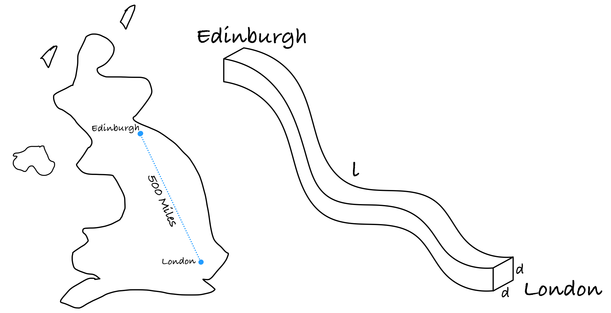
Fig. 6.18 On the left, sketch of UK map with Edinburgh-London distance. On the right, the sketch of the ideal tube of length \(l\) and width \(d\) containing a full tank of fuel.#